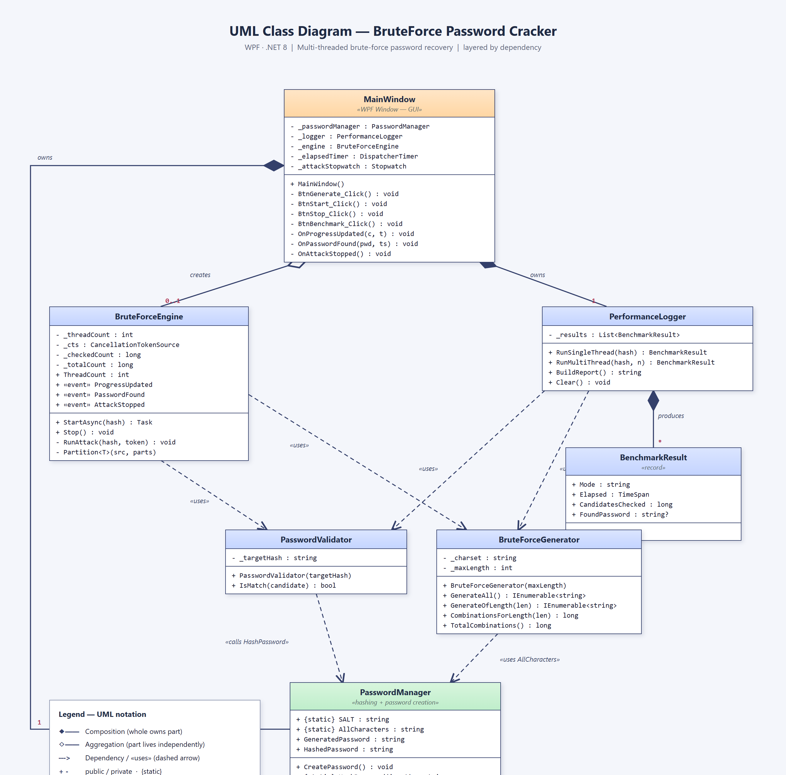
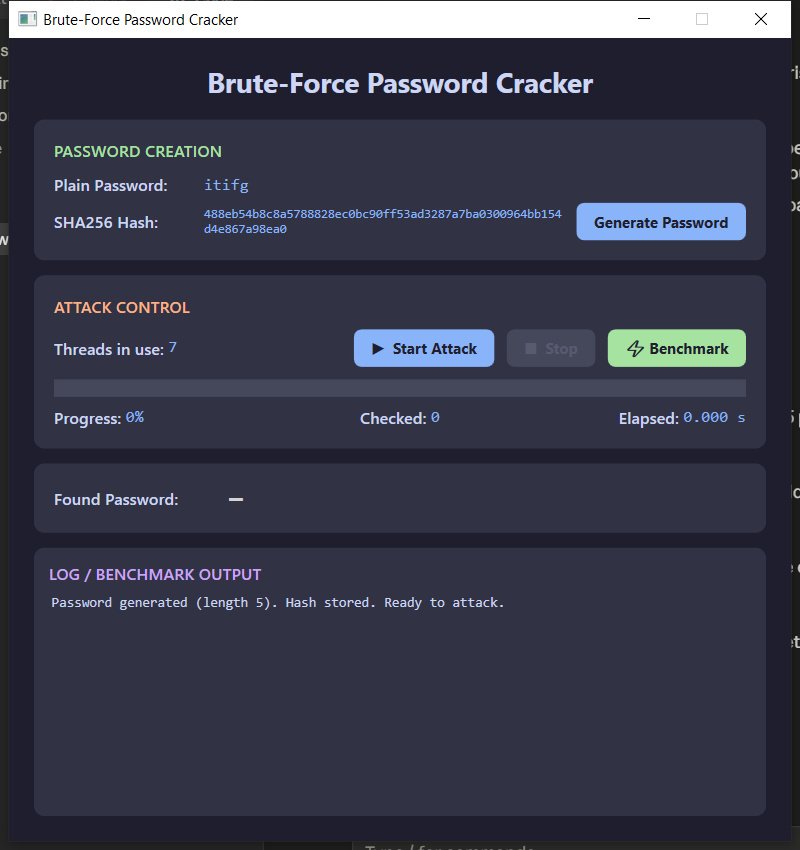
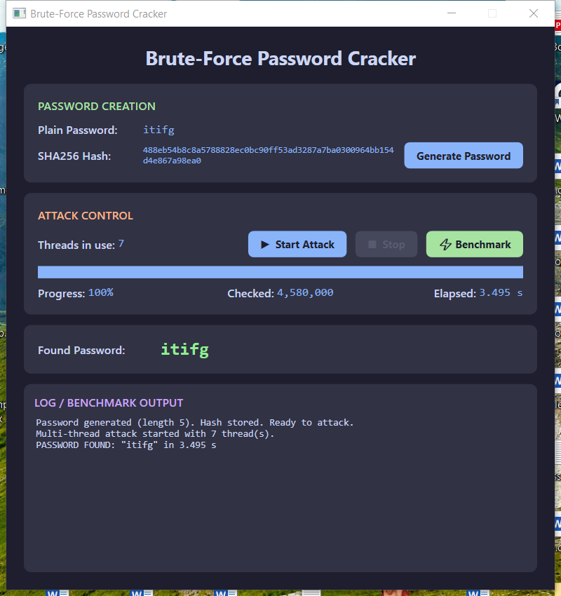
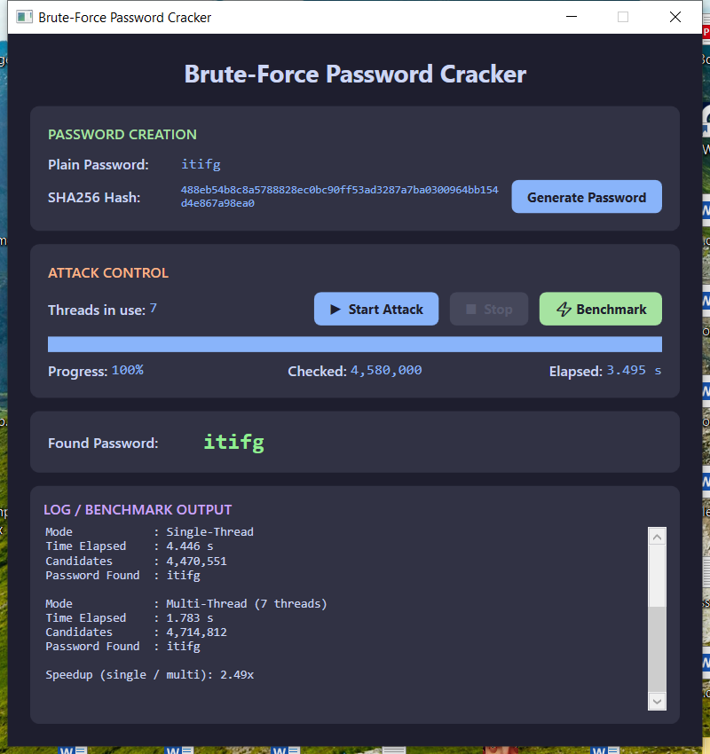

This application recovers a hashed password by brute force. A random password is created and hashed with SHA-256 + a constant static salt; the attacker side then searches every possible character combination — starting from length 1 — across multiple threads until the matching plaintext is found. The program is built with WPF on .NET 8 and has a graphical interface for password creation, starting/stopping the attack, live progress, elapsed time, and the recovered password. It also benchmarks single-threaded vs multi-threaded execution.
Following the requirements, each major responsibility lives in its own class and file, and the brute-force generator and validator are implemented independently.
| File | Class | Responsibility |
|---|---|---|
| PasswordManager.cs | PasswordManager | Creates the random password (length [4,6)) and hashes any string with SHA-256 + static salt. |
| PasswordValidator.cs | PasswordValidator | Independently checks whether a candidate's hash equals the target hash. |
| BruteForceGenerator.cs | BruteForceGenerator | Generates all combinations from length 1 → 6; maps an index to a candidate for partitioning. |
| BruteForceEngine.cs | BruteForceEngine | Coordinates the multi-threaded attack: partitions the search space, raises progress/found events, stops all threads on success. |
| PerformanceLogger.cs | PerformanceLogger | Runs and logs the single-thread vs multi-thread benchmark and computes the speedup. |
| MainWindow.xaml(.cs) | MainWindow | The GUI; wires the classes together and updates the display on the UI thread. |
The diagram below shows the classes, their attributes and methods, and the relationships between them — composition (filled diamond), aggregation (hollow diamond) and dependency (dashed «uses» arrow), with multiplicities.

Every item from the brief is implemented. The table maps each requirement to where and how it is met.
| Requirement | Status | How it is implemented |
|---|---|---|
| UML class diagram | Done | Section 2; sources UML_ClassDiagram.puml/.html/.png. |
| GUI: password creation, start/stop, progress, elapsed time, result | Done | MainWindow.xaml — Generate button, Start/Stop, progress bar + %, elapsed timer, found-password field, log pane. |
| Each major function in a separate class/file | Done | Six classes in six files (see Section 1). |
| (a) SHA-256 with a constant static salt | Done | PasswordManager.HashPassword() hashes SALT + input; SALT is a const. |
| (b) Password length random in [4,6) | Done | _random.Next(4, 6) → 4 or 5 characters. |
| (c) Brute force from length 1 up to 6, length unknown in advance | Done | Engine loops length = 1 → 6; it never reads the real length. |
| (d) Multi-threading (Thread / Task) | Done | Engine uses Task; the benchmark also uses raw Thread. |
| (e) Use at most (CPU cores − 1) | Done | Math.Max(1, Environment.ProcessorCount - 1) → 7 threads on this 8-core machine. |
| (f) GUI: start/stop, progress, elapsed time, found password | Done | See the screenshots in Section 5. |
| 5. Demonstrate parallel (not sequential) execution | Done | Threads search disjoint index ranges simultaneously; the benchmark shows multi-thread checks more candidates in less wall-clock time. |
| 6. Stop all threads immediately once found | Done | A shared CancellationTokenSource is cancelled on the first match; every thread checks the token each iteration. |
| 7. Generator and validator separate & independent | Done | BruteForceGenerator produces candidates; PasswordValidator only compares hashes — neither references the other. |
| 8. Log single-thread vs multi-thread performance | Done | PerformanceLogger + the “⚡ Benchmark” button; results in Section 4. |
The benchmark runs the same brute force twice against the same hash — first on one thread, then on CPU cores − 1 threads — and records the wall-clock time and the number of candidates checked. Example run (machine: 8 logical cores → 7 worker threads; recovered password itifg, length 5):
| Mode | Threads | Time elapsed | Candidates checked | Result |
|---|---|---|---|---|
| Single-thread | 1 | 4.446 s | 4,470,551 | itifg |
| Multi-thread | 7 | 1.783 s | 4,714,812 | itifg |
| Speedup (single ÷ multi) | 2.49× | |||
The multi-threaded run checked more candidates (4.71M vs 4.47M) yet finished in well under half the time. That is the signature of genuine parallel execution: several threads scan different parts of the keyspace at once, so more total work is done per second. The speedup is below the theoretical 7× because the workload is small (seconds), so thread start-up and the early short lengths add fixed overhead; the gap widens for larger search spaces.



Repository version history: v1.0 implementation v1.1 UML diagram v1.2 fixes + benchmark/screenshots — see README.md and the Git commit log.